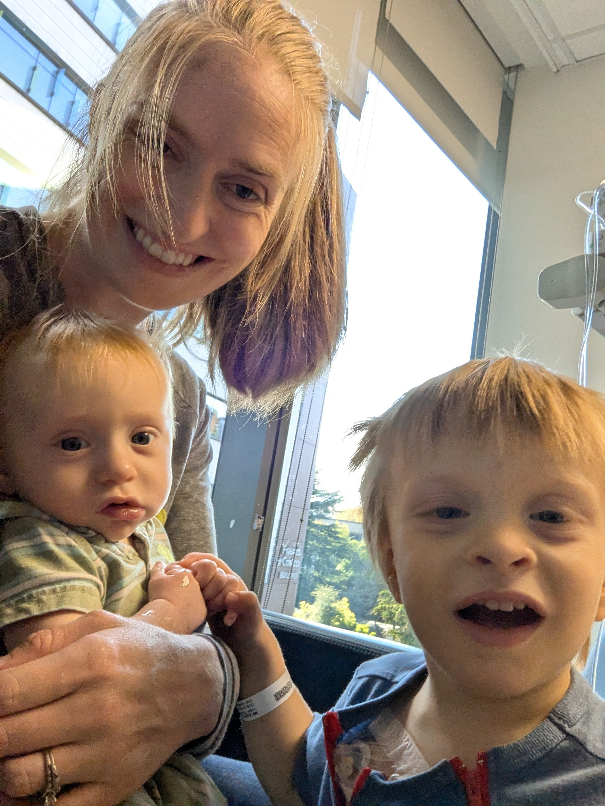

On Schedule
October 10, 2026
Cruising down the freeway much faster than I normally would, I blew past a highway patrolman. I hoped he wouldn't stop me, but not because I was afraid of a ticket. Over and over, the doctors have told us over the past 4 months that Micaiah getting any kind of a fever should be treated as a medical emergency. He measured at 101, and the guidelines they gave us said that would officially qualify as a fever, requiring medical attention. This was on top of a poor appetite for breakfast. We called ahead and received instructions for where to go. There was a lot of ambiguity in my mind regarding what this would mean. How concerned should I be? How quickly could this go bad?
When we finally arrived, I dropped Micaiah and Jerusha off at the door while I parked and brought the other boys in. When I got there, I walked into the room where six nurses wearing contact-precautionary PPE were attending to Micaiah. I arrived just in time for them to measure his temperature at 100. They drew labs to check his immunity and pulled cultures to check for any kind of infection. Fortunately, everything came back looking good. They didn't see evidence of infection (that's the main concern because his port is vulnerable), and they were comfortable with his ability to fight off a virus due to his high blood counts.
They observed him for a while, and noted that his behavior was more lethargic than normal. It might have had something to do with the already short nap on the car ride getting cut even shorter. By the time they discharged us, he was acting completely normally. At discharge, his temperature was a 98.5, and we had instructions to continue to monitor. It was the weirdest flash-in-the-pan fever I had ever seen. The sickness didn't affect his treatment schedule at all. Four days later, he was back at Children's with Jerusha for his round 5 infusions while I stayed home with a feverish Elias (his fever was short-lived as well).

Hey, look! It's me!
It sounds like this will be the last regular IV chemotherapy infusion. We will get another eye exam and another MRI at the end of the month (10/28 and 10/30 respectively), and then we're supposed to move on to intra-arterial chemo treatments. We're nervous about how the different style of treatment will affect him. It's no secret how well he's been taking the treatment so far. He's acting totally normally, eating well, playing well, and his weight gain has been tracking consistently in the 50th percentile. The cherry on top is that he still hasn't lost a single hair. All these mini miracles might not continue with the new treatment, but we trust that God will continue to watch out for His little two-year-old.